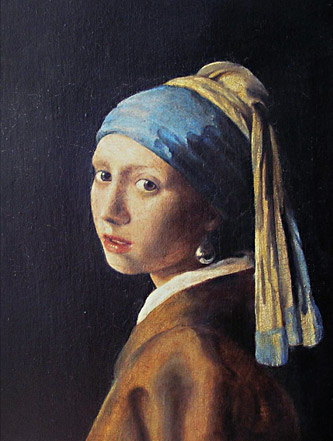
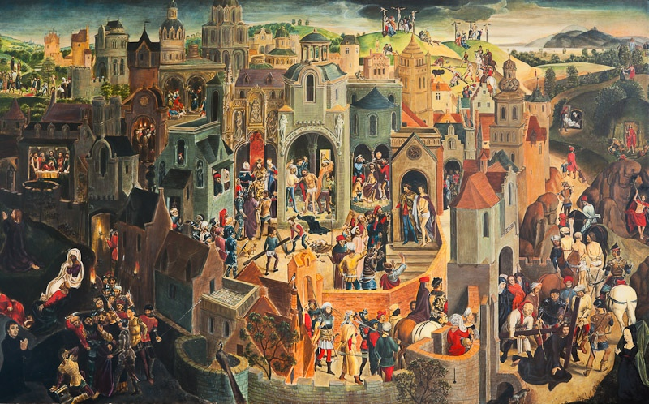
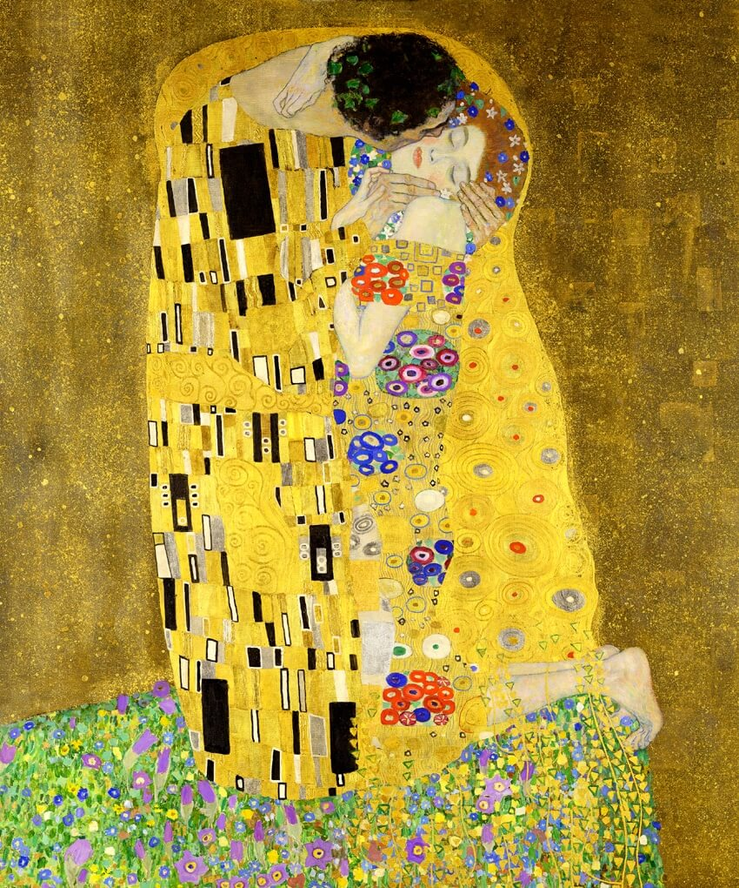
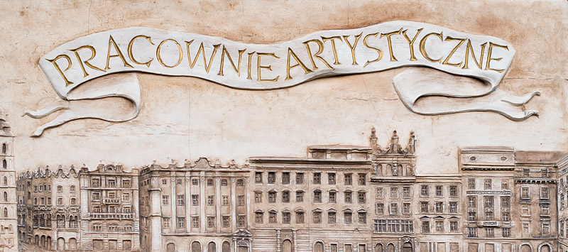
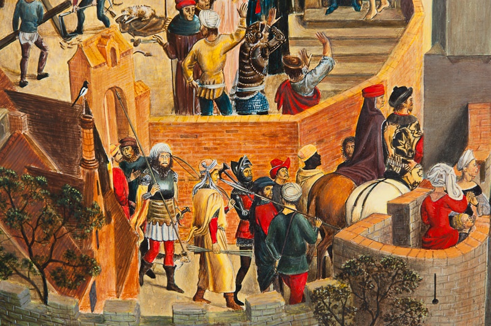

Zofia Siek
Ręcznie malowane reprodukcje dzieł wielkich mistrzów, profesjonalna konserwacja oraz warsztaty artystyczne inspirowane tradycją.
Oferta
Łączę tradycyjne techniki malarskie z wieloletnim doświadczeniem w konserwacji, tworząc prace najwyższej jakości.
Ręcznie malowane reprodukcje dzieł mistrzów — tempera jajeczna, technika olejowa. Każda kopia to unikalne dzieło, wierne oryginałowi.
Dowiedz się więcejProfesjonalna konserwacja i restauracja zabytków oraz dzieł sztuki. Przywracam dawną świetność obrazom, rzeźbom i elementom architektonicznym.
Dowiedz się więcejWarsztaty artystyczne inspirowane wielkimi mistrzami malarstwa. Poznaj tajniki tradycyjnych technik w kameralnej atmosferze.
Dowiedz się więcejPortfolio
Każda praca to rezultat pasji, precyzji i głębokiego szacunku do oryginału.






Opinie
FAQ
Czas realizacji zależy od rozmiaru i stopnia skomplikowania dzieła. Proste kopie mogą powstać w ciągu 2–4 tygodni, natomiast bardziej złożone prace mogą wymagać 2–3 miesięcy. Każde zlecenie wyceniam indywidualnie.
Pracuję głównie w technice tempery jajecznej oraz w technice olejowej. Dobór techniki zależy od oryginału — staram się jak najwierniej oddać charakter pierwowzoru.
Tak, realizuję indywidualne zamówienia. Wystarczy skontaktować się ze mną z opisem lub zdjęciem oryginału, a przygotuję wycenę i termin realizacji.
Warsztaty obejmują naukę tradycyjnych technik malarskich — od przygotowania podłoża, przez mieszanie pigmentów, po samo malowanie. Zajęcia prowadzę w kameralnych grupach, co pozwala na indywidualne podejście do każdego uczestnika.
Koszt konserwacji zależy od stanu obiektu, jego rozmiaru i zakresu prac. Po wstępnych oględzinach przygotowuję szczegółową wycenę. Zapraszam do kontaktu w celu umówienia konsultacji.
Skontaktuj się ze mną — chętnie porozmawiam o Twoim projekcie i przygotuję indywidualną wycenę.
Skontaktuj się